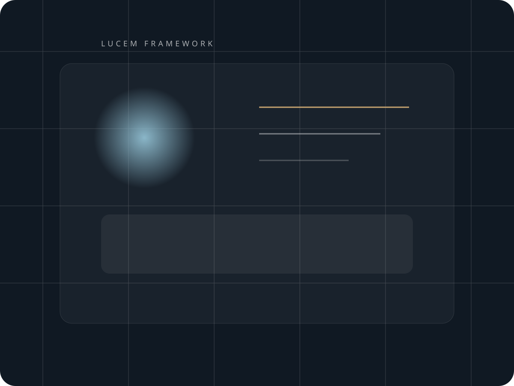

Private Advisory Vehicle
For mandates that require composure, judgement, and quiet force.
Lucem Services exists for the work that sits outside neat categories: strategy in motion, special situations, independent projects, and trusted execution where a principal wants direct access rather than a parade of account managers.
What This Is
A high-trust operating partner for work that cannot afford generic thinking.
Lucem is designed as a discreet consulting platform with a premium posture and a practical bias. It works best with owners, executives, and private operators who need someone commercially sharp, operationally useful, and comfortable navigating ambiguity.
Principal office support
Opportunity shaping
Project rescue
Commercial coordination
Capabilities
High-end by posture. Useful by design.
The point of Lucem is not to look large. It is to be credible, responsive, and unusually effective in assignments where the answer is not obvious from the start. Engagements stay lean, principal-led, and tailored to the commercial reality of the work.
Strategic advisory
Execution support
Independent research and position papers
Operator-facing commercial problem solving

Working Style
Selective, direct, and designed to stay out of the way.
Private Enquiries
Open to a limited number of mandates each quarter.
High-trust introductions are preferred.
Lucem Services is best suited to principals and partners looking for a direct conversation about fit, scope, and timing.
hello@lucemservices.com
Private consulting vehicle for select independent work.